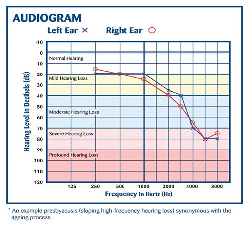

Data
The sensors we will be using are instruments and tools that an audiologist uses, such as PTA(Bone conduction test that will check how well sound are transmitted through the bone.), and auriscope (a small handheld torch which allows the doctor to see the eardrum). This will tell whether the patient is deaf or not, and data from these sensors will be plotted on an audiogram. Getting these complicated instruments and tools will be difficult without the right expertise, however, by cooperating with an audiologist and get some anonymous samples related to our solution, it would be sufficient.
The data we will collect for figuring out the need of this invention is the results of audiograms performed by audiologists that have patients from different groups of people. This will try to cover groups of people from everything from construction workers to office clerks. This is an example of an audiogram that detects the hearing from a range of hertz, and how much decibel it is required for the test subject to hear it.
